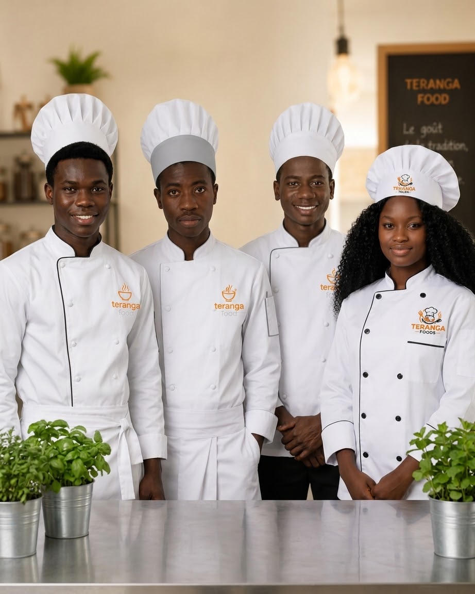
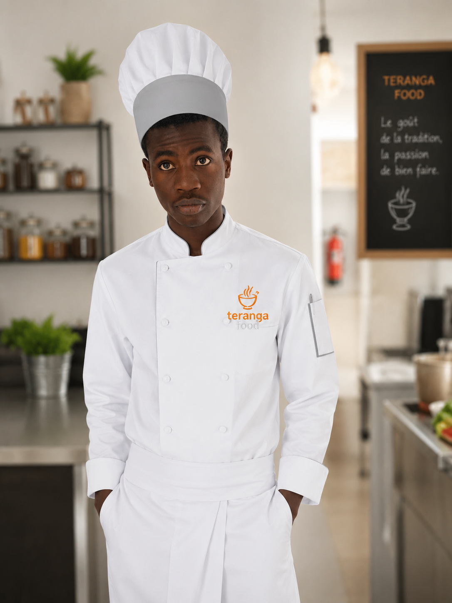
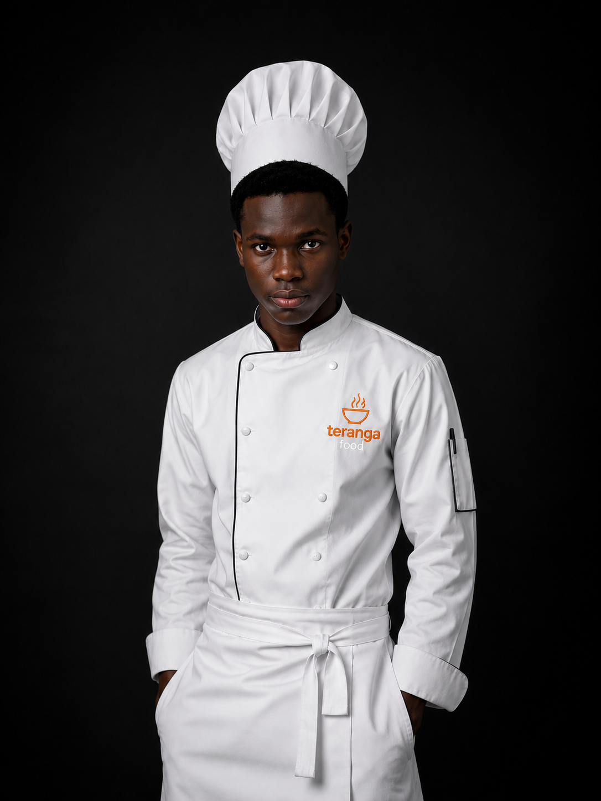
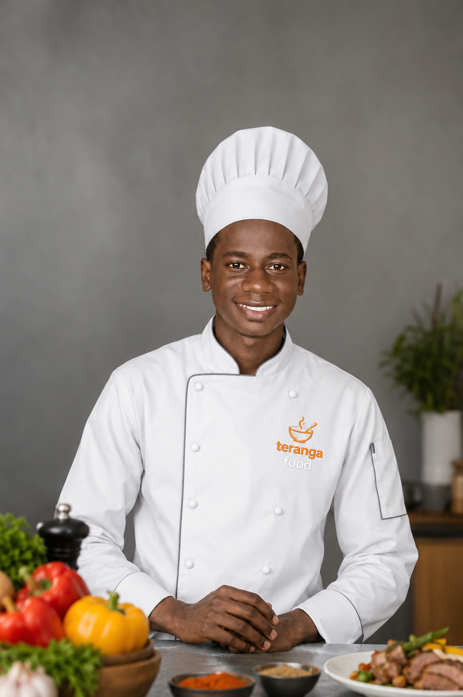

Une passion pour la cuisine, un engagement pour la qualité.

Teranga Food est un projet imaginé par quatre étudiants passionnés de cuisine et de restauration. Inspiré par la célèbre hospitalité sénégalaise, notre restaurant met à l'honneur des plats traditionnels et modernes préparés avec des ingrédients frais.
Notre ambition est d'offrir une expérience culinaire unique dans un cadre chaleureux où chaque client se sent comme chez lui.
Depuis notre création, nous mettons un point d'honneur à offrir un service rapide, une cuisine savoureuse et un accueil exceptionnel.
Chez Teranga Food, nous croyons que la bonne cuisine rassemble les familles, les amis et les collègues autour d'un moment de partage. Notre objectif est de devenir une référence de la restauration au Sénégal grâce à notre passion et notre créativité.

Fondateur

Cofondateur
Responsable Cuisine

Responsable Service
Des plats préparés avec des ingrédients frais.
La Teranga est au cœur de notre service.
Vos commandes sont livrées rapidement.
Votre satisfaction est notre priorité.
Années d'expérience
Clients satisfaits
Cuisine sénégalaise authentique
Produits frais